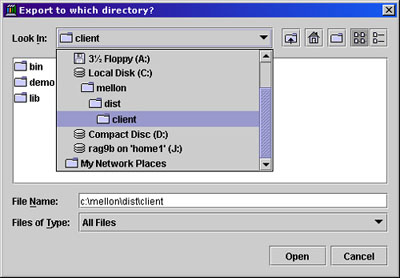
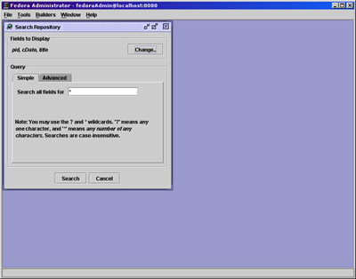
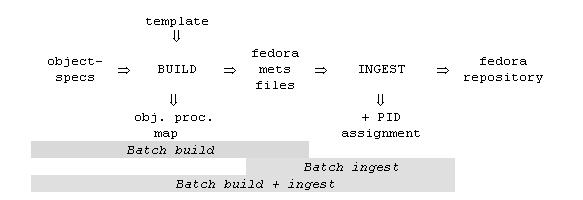
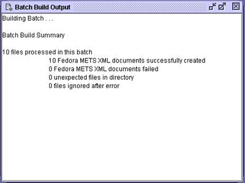
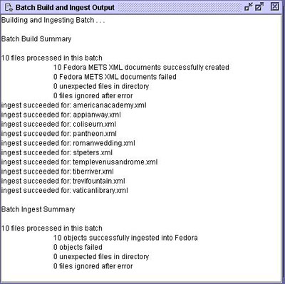

<html>

<head>

<title>Fedora&#153; Administrator Documentation</title>
</head>

<body>

<div class=Section1>

<div>

<div>

<div>

<h1><a name=d0e3></a></h1>

</div>

      <div> 
        <h1>Fedora&#153; Administrator Documentation</h1>

</div>

<div>

<h3><i>Software Release 2.0</i></h3>

</div>

      <div> 
        <h3>Fedora&#153; Development Team</h3>

</div>

<div>

        <p class=copyright>Copyright © 2002-2005 The Rector and Visitors of The University 
          of Virginia and Cornell University</p>

</div>

<div align=center>

<hr size=2 width="100%" align=center>

</div>

</div>

<div>

<p><b>Table of Contents</b></p>

<p><a href="#d0e49">Introduction</a></p>

<p><a href="#d0e54">Starting Fedora Administrator</a></p>

<p><a href="#d0e71">Menus</a></p>

<p><a href="#d0e92">File Menu</a></p>

<p><a href="#d0e587">Tools Menu</a></p>

<p><a href="#d0e1318">Builders</a></p>

<p><a href="#d0e1328">Window Menu</a></p>

<p><a href="#d0e1349">Help Menu</a></p>

<p><a href="#d0e1364">Appendix A: Digital Object Construction</a></p>

</div>

<div>

<div>

<div>

<h2><a name=d0e49></a>Introduction</h2>

</div>

</div>

<p>Fedora Administrator is the direct link to API-M functionality for
repository administrators. Using this tool it is possible to ingest, search for
and retrieve, modify and purge data objects and build, search for and retrieve,
modify, and purge behavior objects (Behavior Definitions and Behavior
Mechanisms).</p>

</div>

<div>

<div>

<div>

<h2><a name=d0e54></a>Starting Fedora Administrator</h2>

</div>

</div>

<p>navigate to the $FEDORA_HOME/client/bin directory</p>

<p>fedora-admin [hostname] [port] [user] [pass]</p>

<p>For example, <em>fedora-admin localhost 8080 fedoraAdmin fedoraAdmin</em>
will start the GUI for a server running on the local machine, port 8080, where
&quot;fedoraAdmin&quot;has been used both as the name and password of the
server administrator. </p>

<div>

<p></p>

</div>

<p>Added in the 1.2 release of Fedora is the authentication dialog. When you
start Fedora Administrator, you will be asked to choose the server to which you
wish to connect, your username and password. The server and username fields are
pre-populated and the password is validated using values from fedora.fcfg</p>

</div>

<div>

<div>

<div>

<h2><a name=d0e71></a>Menus</h2>

</div>

</div>

<p>Fedora Administrator has been designed with standard GUI based menus. The
following menus are available in the Fedora Administrator window:</p>

<div>


<p>Builders</p>

<p>Window</p>

<p>Help</p>

</div>

</div>

<div>

<div>

<div>

<h2><a name=d0e92></a>File Menu</h2>

</div>

</div>

<div>

<p></p>

</div>

<p>Commands on the file menu allow a repository administrator to perform
operations on objects in the repository or to log in to a different repository.</p>

<div>

<div>

<div>

<h3><a name=d0e100></a>New</h3>

</div>

</div>

<div>

<p></p>

</div>

<p>The <em>New</em> menu option allows users to build new Fedora objects from
pre-existing component parts. When the <em>New...Data Object</em> option is
selected a skeletal Fedora data object is ingested into the repository and the
repository administrator/object owner then completes the object by defining a
Behavior Definition and Behavior Mechanism for the object, adding datastreams,
and finally binding disseminators and datastreams together.</p>

<p>Users may also create behavior definition and behavior mechanism objects by
selecting these submenu options. The complex task of building WSDL objects
dictated the necessity of onscreen, context sensitive help screens for these
builders. Clicking the <em>Help</em> button on any pane in the Behavior
Definition Builder or Behavior Mechanism Builder will open a popup help screen
defining each field in view.</p>

<div>

<div>

<div>

<h4><a name=d0e119></a>Creating a New Data Object</h4>

</div>

</div>

<p>This section provides instructions for building a new data object using
Fedora Administrator.</p>

<blockquote>

<p>On the File Menu, select <em>New</em>.</p>

<p>From the New submenu, select <em>Data Object</em>.</p>

<p>The New Object Dialog appears.</p>

<div>

<p></p>

</div>

<p>Fill in the label data for the object and the content model to which the
data object subscribes. If a custom PID is desired, click the check box and
fill in the PID value.</p>

<p>Clicking <em>Create</em> causes a Fedora data object to be created and
ingested into the repository. The new object is displayed in a tabbed pane
showing the following tabs: <em>Properties, Datastreams, and Disseminators</em>.</p>

<p>Click the Disseminator tab to bring that pane to the front. On this tab, the
user must</p>

<div>

<p>Fill in the Disseminator Label</p>

<p>Select a Behavior Definition from the drop down
menu</p>

<div>

<p></p>

</div>

<p>Once the Behavior Definition has been selected, the
pane will display a list of methods available for and parameters required by
the Behavior Definition, and the Behavior Mechanism drop down menu will appear.</p>

<p>Select a Behavior Mechanism from the drop down
menu</p>

<div>

<p></p>

</div>

<p>The values in the menu are pre-populated based on
the Behavior Definition chosen in the previous step. Once the Behavior
Mechanism is selected, the Bindings tabs are shown for each method required by
that Behavior Definition/Behavior Mechanism pairing.</p>

<div>

<p></p>

</div>

<p>Click on the <em>Datastreams</em> tab</p>

<p>The display will show a side tabbed pane displaying
all datastreams currently in the object. All Fedora data objects contain a
Dublin Core metadata datastream after ingest. The user will wish to edit this
metadata, adding fields as appropriate for the data object in question.</p>

<div>

<p></p>

</div>

<p>Click on the <em>New</em> side tab</p>

<p style='margin-left:.5in'>Fill in the label for the datastream, select the
MIME type</p>

<div>

<p></p>

</div>

<p>Select the Control Group. Clicking through the
control group options will show text defining each control group option.</p>

<p>If the datastream is <em>Internal XML Metadata</em>,
select the classification from the drop down menu (descriptive, digital
provenance, source, rights, or technical). The user may enter text directly
into the editing window or data may imported from a file by clicking <em>Import</em>
and selecting or browsing to the location of the XML metadata file. Click <em>Save</em>
to save the datastream to the object.</p>

<p>If the datastream is <em>Managed Content</em>,
click <em>Import</em> and select or browse to the file location of the import
file. Once import is complete, click <em>Save</em> to save the datastream to
the object.</p>

<p>If the datastream is <em>External Referenced
Content</em>, fill in the Location URL and click <em>Save</em> to save the
datastream to the object.</p>

<p>If the datastream is <em>Redirect</em>, specify the
redirect URL in the Location text box and click <em>Save</em> to save the
datastream to the object.</p>

<p>Once all datastreams required have been created and
saved, you must bind the disseminators and datastreams together.</p>

<p>Click on the <em>Disseminators</em> tab</p>

<p>For each Binding required by the Behavior
Definition/Behavior Mechanism Contract, the user must select a datastream.</p>

<p>Click on the Binding tab to be defined. Click
the <em>Add</em> button.</p>

<div>

<p></p>

</div>

<p>From the New Binding dialog, select the
datastream from the drop down menu which matches the Binding to be completed.
Click <em>OK</em>.</p>

<div>

<p></p>

</div>

<p>Repeat for each binding/datastream pair. When all
Bindings are complete, the <em>Save Disseminator</em> button will be active.
Click to save the Disseminator. Your new object is now complete.</p>

</div>

</blockquote>

</div>

</div>

<div>

<div>

<div>

<h3><a name=d0e271></a>Open</h3>

</div>

</div>

<div>

<p></p>

</div>

<p>The <em>Open</em> menu requires input of an object PID for retrieval of the
object. Upon retrieval, the object is displayed on two tabbed panes.</p>

<p><em>Object Properties Pane</em> </p>

<p>The default first pane is the Object Properties pane. On this pane the state
and label of the object may be modified. Creation and modification dates are
shown, along with the content model to which the object subscribes and the
owner of the object.</p>

<blockquote>

<div>

<p><b>Object States</b></p>

<p><em>Active</em>: the object is freely available
to all users.</p>

<p><em>Inactive</em>: the object is only available
to repository administrators.</p>

<p><em>Deleted</em>: the object has been marked for
permanent removal from the repository, pending review by repository
administrators.</p>

</div>

</blockquote>

<p>Also available on this pane is the ability to view the object&#8217;s XML,
export the object to a file, or purge the object from the repository.</p>

<blockquote style='margin-top:5.0pt;margin-bottom:5.0pt'>

<p><b>Viewing XML</b>: From this window, the XML of the
object can be viewed, but cannot be modified.</p>

<p><b>Export Object</b>: If Export is selected, the
user will be prompted for a file name and location to which to write the XML
file. The format for exported objects is fedora:mets.</p>

<p><b>Purge Object</b>: Purging an object completely
removes it from the repository. Upon selecting the Purge option, the user will
be prompted to enter a reason for the object&#8217;s removal. Please note that
objects with dependencies in the repository cannot be purged. <b>WARNING:
There is no &#8220;Are you sure?&#8221; dialog with this option and the purge
cannot be undone</b>.</p>

</blockquote>

<p><em>The Datastreams Pane</em> </p>

<p>On the Datastreams Pane, the state of each datastream in the object can be
modified, along with the datastream label and location. The MIME type of the
datastream is shown, along with the control group, info type, create date, and
the Fedora URL of the object.</p>

<blockquote>

<div>

<p><b>Datastream States</b></p>

<p><em>Active</em>: the datastream is freely
available to all users.</p>

<p><em>Inactive</em>: the datastream is only
available to repository administrators.</p>

<p><em>Deleted</em>: the datastream has been marked
for permanent removal from the repository, pending review by repository
administrators.</p>

</div>

</blockquote>

<p>From this pane, users may additionally request to view a datastream, add a
new datastream to the object, export a datastream&#8217;s contents, or purge
the datastream from the object.</p>

<p>Please note that datastreams which are linked to active disseminators may
not be purged.</p>

<p>If a datastream has a <em>text</em> MIME type (e.g., <em>text/xml</em>, it
may be edited in place by clicking the <em>Edit</em> button and making the
desired changes in the editing window. A user may also choose to import new
data by clicking the <em>Import</em> button or to export the data contained in
the datastream by clicking the <em>Export</em> button. If the datastream is not
linked to an active disseminator, it may be purged from the object. Note: Purge
is not valid for the DC metadata datastream because it is always linked to the
default disseminator.</p>

<p>If <em>Import</em> is selected, the user is prompted for a file name or url
where the the import file is located. </p>

<p>If <em>Export</em> is selected, the user is prompted for a file name and
location to which to write the XML file of the datastream content.</p>

<p>If <em>Purge</em> is selected, the user is warned that the operation is
permanent and must click &#8220;Yes&#8221; to continue. If &#8220;Yes&#8221; is
selected, the datastream is immediately purged from the object.</p>

<p>Only datastreams with a <em>text</em> MIME type may be edited. Datastreams
with other MIME types (e.g., <em>image</em> or <em>application</em>, e.g., <em>image/jpeg</em>
or <em>application/pdf</em> may only be viewed, exported, or purged from the
object.</p>

</div>

<div>

<div>

<div>

<h3><a name=d0e418></a>Ingest</h3>

</div>

</div>

<p>When selecting to ingest objects from the File menu, users have the option
of ingesting a single object or multiple objects.</p>

<p>Objects may be ingested from a file or from another repository.</p>

<div>

<div>

<div>

<h4><a name=d0e425></a>One Object</h4>

</div>

</div>

<div>

<p></p>

</div>

<p>Choosing Ingest One Object from File, the user is prompted to select the file
name from a dialog box or browse to the location of the file on the local
drive(s) for the file to be ingested. Clicking <em>Open</em> will cause the
file to be ingested. If the repository has been set to retain PIDs on ingest in
fedora.fcfg, the PID in the object XML will be maintained. Otherwise, the PID
will be overwritten.</p>

<div>

<p></p>

</div>

<p>Choosing Ingest One Object from Repository causes the Source Repository
dialog box to appear. The user must fill in the hostname: port of the source
repository, and enter a username and password. Clicking <em>OK</em> initiates
the Input dialog, where the user is prompted for a PID value. Clicking <em>OK</em>
on the Input dialog completes the object ingestion.</p>

<div>

<p></p>

</div>

</div>

<div>

<div>

<div>

<h4><a name=d0e450></a>Objects by Type</h4>

</div>

</div>

<div>

<p></p>

</div>

<p>Users may also ingest all the files in a directory or all the files of a
specific object type in a repository by selecting the Ingest Objects by Type
submenu item.</p>

<p>Upon selecting Ingest Objects By Type from File, a dialog box prompts the
user to select or browse to the directory containing the objects to be
selected. Once the directory has been identified, clicking <em>Open</em> will
activate a second dialog box which prompts the user to select the type of
object to be ingested&#8212;behavior definition, behavior mechanism, and/or
data object.</p>

<div>

<p></p>

</div>

<p>If you choose to separate your objects by type into separate directories for
ingestion, please remember that the behavior objects to which a data object are
bound must exist in the repository before the data object can be ingested.
Order of ingestion must be</p>

<ol>

<li>Behavior Definition</li>

<li>Behavior Mechanism</li>

<li>Data Object</li>

</ol>

<p>Using the Ingest Objects by Type from File submenu allows users to place all
objects in a single directory, and the Fedora software will ingest the objects
in that directory in the proper order.</p>

<p>If the repository has been set to retain PIDs on ingest in fedora.fcfg, the
PID in the object XML will be maintained. Otherwise, the PID will be
overwritten.</p>

<div>

<p></p>

</div>

<p>Choosing Ingest Objects by Type from Repository causes the Source Repository
dialog box to appear. The user must fill in the hostname: port of the source
repository, and enter a username and password. Clicking <em>OK</em> causes the
Select Object Type dialog to appear. Selecting the types of objects to be
ingested from the source repository--behavior definitions, behavior mechanisms,
or data objects--and clicking <em>OK</em> initiates ingestion of <b>all</b> objects of that type from the source repository. </p>

<div>

<p></p>

</div>

<p>During ingest, the status bar at the bottom of the Fedora Administrator
window shows the activities of the server. Once ingest is complete, a summary
pane will appear giving counts of objects successfully ingested, objects
failed, and time elapsed. Click <em>OK</em> to clear this message. The View
Ingest Log dialog will then open. The user may click <em>Yes</em> and view the
detailed log file or <em>No</em> to view the file at a later time. The log file
is created in the $FEDORA_HOME/client/logs/ directory.</p>

</div>

</div>

<div>

<div>

<div>

<h3><a name=d0e510></a>Export</h3>

</div>

</div>

<p>Users have the option of exporting a single object or exporting objects by
type.</p>

<div>

<div>

<div>

<h4><a name=d0e515></a>One Object</h4>

</div>

</div>

<div>

<p></p>

</div>

<p>When the Export One Object option is selected, the user is prompted to
select a directory to which the export file will be written. Clicking <em>Open</em>
causes the user to be prompted for an object PID and when <em>OK</em> is
clicked, the file is exported to the selected directory. The file is named <em>pidvalue.xml</em>.</p>

</div>

<div>

<div>

<div>

<h4><a name=d0e532></a>Export Object by Type</h4>

</div>

</div>

<div>

<p></p>

</div>

<div>

<p></p>

</div>

<p>When the Export Object by Type option is selected, the user is prompted to
select a directory to which the export files will be written. Clicking <em>Open</em>
causes the user to be prompted for which type of object is to be
exported--behavior definitions, behavior mechanisms, or data objects. The
default selection is data objects. When the file types are selected and <em>OK</em>
is clicked, the system searches for and retrieves <span class=bold><b>all</b></span>
objects of that type, which are then exported to individual files in the
destination directory. The files are named <em>pidvalue.xml</em>.</p>

</div>

</div>

<div>

<div>

<div>

<h3><a name=d0e555></a>Purge Object</h3>

</div>

</div>

<div>

<p></p>

</div>

<p>Purging an object completely and permanently removes it from the repository.
Upon selecting the Purge option, the user will be prompted to enter an object
PID and a reason for the object&#8217;s removal. Please note that objects with
dependencies in the repository cannot be purged. <b>WARNING:
There is no &#8220;Are you sure?&#8221; dialog with this option.</b></p>

</div>

<div>

<div>

<div>

<h3><a name=d0e566></a>View Object XML</h3>

</div>

</div>

<div>

<p></p>

</div>

<p>This menu option allows a user to view the xml, but not edit. XML may be cut
and pasted into another application using standard keyboard commands of the
host operating system, (e.g. CTL-C, CTL-V in Windows) if desired.</p>

</div>

<div>

<div>

<div>

<h3><a name=d0e574></a>Change Repository</h3>

</div>

</div>

<div>

<p></p>

</div>

<p>The Change Repository option allows a repository administrator to login to a
different Fedora repository. When selected, this menu option causes the Login
dialog to be displayed. The repository administrator may then select a
different Fedora server with which to connect, entering the appropriate login
name and password.</p>

</div>

<div>

<div>

<div>

<h3><a name=d0e582></a>Exit</h3>

</div>

</div>

<p>The Exit menu option closes all connections with the Fedora server instance
and logs the user out of the repository.</p>

</div>

</div>

<div>

<div>

<div>

<h2><a name=d0e587></a>Tools Menu</h2>

</div>

</div>

<div>

<p></p>

</div>

<p>Commands on the Tools menu provide the user with the ability to search and
retrieve objects from the repository, build and ingest batches of digital
objects, and under the console submenu, gain access directly to API-M and API-A
methods for testing purposes. </p>

<div>

<div>

<div>

<h3><a name=d0e595></a>Search/Browse Repository</h3>

</div>

</div>

<p>The Search/Browse Repository menu option provides a mechanism for searching
and retrieving objects from the Fedora repository. Upon ingestion, metadata
from the Fedora System Metadata section and the Dublin Core (DC) Metadata
section of the object are indexed in a relational database, and may be searched
using this menu option. The DC Metadata section is an optional
Implementer-Defined XML Metadata datastream in the object, where the <em>Datastream
ID</em> is DC, and the XML conforms to the schema at <a
href="http://www.openarchives.org/OAI/2.0/oai_dc.xsd" target="_top">http://www.openarchives.org/OAI/2.0/oai_dc.xsd</a>.
If a Dublin Core metadata datastream is not provided, Fedora will construct a
minimal DC datastream consisting of the elements dc:title and dc:identifier.
The value for dc:title will be obtained from the object's label (if present in
the object) and the value for dc:identifier will be assigned to the object's
persistent identifier or PID.</p>

<p>The search interface provides both simple and advanced searching. All
queries are case insensitive. Simple Search enables queries of words and
phrases occurring anywhere in than object's indexed metadata fields. Advanced
Search enables fielded searching across any combination of metadata elements
using string comparison operators (&nbsp; = and ~&nbsp;) for string fields, and
value comparison operators (&nbsp; =, &gt;, &#8805;, &lt;, &#8804; &nbsp;) for
date fields (dc:date fields may be treated as both). The wildcards, * and ? may
be used in any string-based query.</p>

<div>

<div>

<div>

<h4><a name=d0e608></a>Simple Search Tab</h4>

</div>

</div>

<div>

<p></p>

</div>

<p>The Simple Search tab is the default selection in the Search Repository
window. The Simple Search query searches both the Dublin Core metadata and the
Fedora System Metadata fields. </p>

<p>At the top of the Search window, the user may select fields to be displayed
by clicking the <em>Change</em> button and selecting/deselecting field names
from the dialog.</p>

<div>

<p></p>

</div>

<p>The Simple Search searches all indexed metadata fields for the text entered
into the text box. All searches are case insensitive. The wildcard character
'*'; can be substituted for any string of characters. The wildcard character
'?'; can be substituted for any single character. Clicking <em>Search</em> will
retrieve a list of objects where the entered text string appears in an indexed
metadata field.</p>

</div>

<div>

<div>

<div>

<h4><a name=d0e629></a>Advanced Search Tab</h4>

</div>

</div>

<div>

<p></p>

</div>

<p>The Advanced Search query enables users to refine their repository search by
searching specific fields for specific values provided in the query. </p>

<div>

<p></p>

</div>

<p>The search conditions can be modified by clicking the <em>Add</em> button,
which opens the Enter Condition dialog. The user selects the field to be
defined from the drop down menu, selects the condition to be matched, and
enters the text to be matched, if appropriate. Clicking <em>OK</em> saves the
condition. Once all conditions are entered, clicking <em>Search</em> will
retrieve a list of objects in which all conditions are met.</p>

</div>

<div>

<div>

<div>

<h4><a name=d0e651></a>Search Results Window</h4>

</div>

</div>

<p>The Search Results Window displays the results of a successful search in a
table format. Across the top of the table are a row of labels of the fields
that have been returned from the objects meeting the search criteria. Double
clicking anywhere on a row opens that object. Right clicking anywhere on a row
opens a pop-up menu that contains object level tasks from which the user may
select. These tasks include <em>Open Object</em>, <em>View Object XML</em>, <em>Export
...</em>, <em>Purge</em>, and <em>Set Object State To</em>. If <em>Set Object
State To</em>is selected, a submenu will provide the user with valid states
from which to select.</p>

<div>

<p></p>

</div>

<p>The <em>Purge</em> and <em>Set Object State To</em> submenu options can be
used on multiple objects by using mouse clicks or the equivalent keyboard
commands to multiselect rows in the Search Results Window. In this way, groups
of objects can be purged from the system, or have their states changed by means
of one search and retrieval operation.</p>

</div>

</div>

<div>

<div>

<div>

<h3><a name=d0e685></a>Batch</h3>

</div>

</div>

<div>

<p></p>

</div>

<p>The Batch menu item includes tools to create and ingest multiple Fedora
objects, which are Fedora-specific METS XML documents contained in files
outside the repository.</p>

<p>It's simple to ingest objects created by one-up edit or by custom scripting.</p>

<p>The Batch menu also supports building objects. This takes a general template
common to all objects in a batch and makes object-specific substitutions into
the template. It also substitutes a common datetime stamp for all date
attributes. The template is a Fedora METS XML document, with data common to the
objects of the batch. Separate XML documents hold the per-object substitution
values.</p>

<p>The relatedness of objects in a batch is defined by what Fedora
Administrator allows to be substituted and by which substitutions you choose to
make. Data from the template are retained, unless replaced per individual
object, including XML comments.</p>

<p>Fedora Administrator provides for three modes of object batch processing: <span
class=bold><b>batch build</b></span>, <span class=bold><b>batch ingest</b></span>,
and a combined <span class=bold><b>batch build and ingest</b></span>. </p>

<p>This phased processing is shown in the following diagram.</p>

<div>

<p></p>

</div>

<div>

<div>

<div>

<h4><a name=d0e715></a>Building Fedora objects in batch</h4>

</div>

</div>

<p>Build a set of Fedora METS XML files from a common Fedora METS template and
simple (non-METS) XML <em>object-specs</em>. The resulting objects are then
ready for ingesting into Fedora.</p>

</div>

<div>

<div>

<div>

<h4><a name=d0e723></a>Fedora Administrator Instructions</h4>

</div>

</div>

<blockquote>

<p>Select <em>Tools</em> on the Fedora Administrator menu bar, select item <em>Batch</em>
and then <em>Build Batch.</em> </p>

<p>This will open a <em>Batch Build</em> window. You may need to adjust this
window&#8217;s size to see its controls. Use the <em>browse</em> buttons to
enter the four required settings. Clicking on a <em>browse</em> button opens a
standard directory/file selection dialog.</p>

<p>Then click the <em>Build this batch</em> button to build the batch of Fedora
METS XML documents.</p>

<div>

<p></p>

</div>

<p>A second (output-only) window will open to show progress. You can build
multiple different batches before closing the <em>Batch Build</em> window.</p>

<div>

<p></p>

</div>

<p>You can then ingest the created batch as described elsewhere in this
document.</p>

<p>No subdirectories or files are deleted by Fedora Administrator. Setup and
cleanup of the files in the batch must be done by you using standard operating
systems facilities.</p>

</blockquote>

</div>

<div>

<div>

<div>

<h4><a name=d0e769></a>To Demo</h4>

</div>

</div>

<blockquote>

<p>You can use files and subdirectories of directory <span class=bold><b>client/demo/batch-demo</b></span>,
relative to your <b>FEDORA_HOME</b> environment
variable. (When you create your own batches, the needed directories and files
can be anywhere in the file space of the system on which you are running Fedora
Administrator or command-line <em>BatchTool</em>.)</p>

<p>Use file <b>mets-template.xml</b> for <em>METS
template</em> (<em>input file</em>).</p>

<p>Use subdirectory <b>object-specifics</b> for <em>XML
specs</em> (<em>input directory</em>); this is a directory holding (all and
only) per-object data.</p>

<p>Use subdirectory <b>objects</b> for METS objects (<em>output
directory</em>); this is a directory to hold (all and only) Fedora METS files
built by Fedora Administrator.</p>

<p>Specify a file path of your choice for <em>object processing map</em> (<em>output
file</em>); this is a file which maps <em>object-specs</em> to objects built.
See the section on <em>object processing maps</em>, elsewhere in this
documentation. Note that PIDs cannot be reported in this (<em>Batch Build</em>)
mode, as they have not yet been assigned.</p>

<p>Optionally select the output format for <em>object processing map</em>,
either <b>xml</b> or <b>text</b>
(<b>xml</b> is the default format).</p>

</blockquote>

</div>

<div>

<div>

<div>

<h4><a name=d0e845></a>Ingesting Fedora Objects in Batch</h4>

</div>

</div>

<p>Create a set of Fedora objects in your repository from a corresponding set
of Fedora METS XML files.</p>

</div>

<div>

<div>

<div>

<h4><a name=d0e850></a>Fedora Administrator Instructions</h4>

</div>

</div>

<blockquote>

<p>Select <em>Tools</em> on the Fedora Administrator menu bar, and select item <em>Ingest
Batch</em>.</p>

<p>This will open a <em>Batch Ingest</em> window. You may need to adjust this
window&#8217;s size to see its controls. Use the <em>browse</em> buttons to
enter the two required settings. Clicking on a <em>browse</em> button opens a
standard directory/file selection dialog. </p>

<div>

<p></p>

</div>

<p>Then click the <em>Ingest this batch</em> button to ingest the batch into
your Fedora repository.</p>

<p>A second (output-only) window will open to show progress. You can ingest
multiple different batches before closing the <em>Batch Ingest</em> window.</p>

<div>

<p></p>

</div>

<p>No subdirectories or files are deleted by Fedora Administrator. Setup and
cleanup is by using standard operating systems facilities. Fedora Administrator
does not itself validate on <em>Batch Build</em>, but batch ingest into Fedora
does. The batch fails on the first individual object ingest failure.</p>

<p>Fedora will not ingest a METS file whose <b>METS:xmldata</b>
elements are empty or contain non-tagged character data.</p>

</blockquote>

</div>

<div>

<div>

<div>

<h4><a name=d0e899></a>To Demo</h4>

</div>

</div>

<blockquote>

<p>You can use files and subdirectories of directory <b>client/demo/batch-demo</b>,
relative to your <b>FEDORA_HOME</b> environment
variable. (When you create your own batches, the needed directories and files
can be anywhere in the file space of the system on which you are running Fedora
Administrator or command-line <em>BatchTool</em>.) </p>

<p>You will need to have already done a <em>Build Batch</em> demo, explained
elsewhere in this document, to populate the <b>objects</b>
directory needed in this current demo. If you have ingested these objects
before, either in this <em>Ingest Batch</em> mode following a separate <em>Build
Batch</em> mode, or in a <em>Build and Ingest Batch</em> mode, you will first
need to edit <b>OBJIDs</b> in the <em>object-spec</em>
files, or to remove the corresponding objects from your Fedora repository.</p>

<p>Use subdirectory <b>objects</b> for <em>METS objects</em>
(<em>input directory</em>); this is a directory holding (all and only) Fedora
METS files to ingest. </p>

<p>Specify a file path of your choice for <em>object processing map</em> (<em>output
file</em>); this is a file which maps objects to their assigned PIDs. See the
section on <em>object processing maps</em>, elsewhere in this documentation.
Note that <em>object-specs</em> of objects previously built by Fedora
Administrator cannot be reported in this (<em>Batch Ingest</em>) mode, as they
(as source documents) are no longer known.</p>

<p>Optionally select the output format for object processing map, either <b>xml</b> or <b>text</b> (<b>xml</b> is the default format).</p>

</blockquote>

</div>

<div>

<div>

<div>

<h4><a name=d0e976></a>Building and ingesting Fedora objects in batch</h4>

</div>

</div>

<p>This process builds a set of Fedora METS XML files from a common Fedora METS
template and simple (non-METS) XML <em>object-specs</em>, then ingests the
resulting batch into Fedora.</p>

</div>

<div>

<div>

<div>

<h4><a name=d0e984></a>Fedora Administrator Instructions</h4>

</div>

</div>

<blockquote>

<p>Select <em>Tools</em> on the Fedora Administrator menu bar, and select item <em>Build
and Ingest Batch</em>.</p>

<p>This will open a <em>Batch Build</em> and Ingest window. You may need to
adjust this window&#8217;s size to see its controls. Use the <em>browse</em>
buttons to enter the four required settings. Clicking on a <em>browse</em>
button opens a standard directory/file selection dialog.</p>

<div>

<p></p>

</div>

<p>Then click the <em>Build and Ingest this batch</em> button to build the
batch of Fedora METS XML documents and then ingest them into Fedora.</p>

<p>A second (<em>output-only</em>) window will open to show progress. You can
build and ingest multiple different batches before closing the <em>Batch Build
and Ingest</em> window.</p>

<div>

<p></p>

</div>

<p>There is then no need to separately ingest the created batch.</p>

<p>No subdirectories or files are deleted by Fedora Administrator. Setup and
cleanup of the files in the batch must be done by you using standard operating
systems facilities.</p>

<p>Fedora Administrator does not itself validate on <em>Batch Build</em>, but
batch ingest into Fedora does. The batch fails on the first individual object
ingest failure.</p>

<p>Fedora will not ingest a METS file whose <b>METS:xmldata</b>
elements are empty or contain non-tagged character data.</p>

</blockquote>

</div>

<div>

<div>

<div>

<h4><a name=d0e1040></a>To Demo</h4>

</div>

</div>

<blockquote>

<p>You can use files and subdirectories of directory <b>client/demo/batch-demo</b>,
relative to your <b>FEDORA_HOME</b> environment
variable. (When you create your own batches, the needed directories and files
can be anywhere in the file space of the system on which you are running Fedora
Administrator or command-line <em>BatchTool</em>.)</p>

<p>If you have ingested these objects before, either in this <em>Build and
Ingest Batch</em> mode or in separate sequential <em>Build Batch</em> and <em>Ingest
Batch</em> modes, you will first need to edit <b>OBJIDs</b>
in the <em>object-spec</em> files, or to remove the corresponding objects from
your Fedora repository.</p>

<p>Use file <b>mets-template.xml</b> for <em>METS
template</em> (<em>input file</em>).</p>

<p>Use subdirectory <b>object-specifics</b> for <em>XML
specs</em> (<em>input directory</em>); this is a directory holding (all and
only) per-object data.</p>

<p>Use subdirectory <b>objects</b> for <em>METS objects</em>
(<em>output directory</em>); this is a directory to hold (all and only) Fedora
METS files built by Fedora Administrator. </p>

<p>Specify a file path of your choice for <em>object processing map</em> (<em>output
file</em>); this is a file which maps <em>object-specs</em> through objects
built and on to PIDs assigned. See the section on <em>object processing maps</em>,
elsewhere in this documentation. Unlike separate <em>Batch Build</em> and <em>Batch
Ingest</em> modes, the complete triple is reported in this <em>Batch Build and
Ingest</em> mode.</p>

<p>Optionally select the output format for <em>object processing map</em>,
either <b>xml</b> or <b>text</b>
(<b>xml</b> is the default format).</p>

</blockquote>

</div>

<div>

<div>

<div>

<h4><a name=d0e1142></a>Object Processing Map</h4>

</div>

</div>

<p>The <em>object-processing-map</em> file has one of the following formats,
depending on the choice of <em>xml</em> or <em>text</em> in Fedora
Administrator. <em>Batch Build</em> processing results in an <em>object
processing map</em> whose individual maps have only <span class=bold><b>path2spec</b></span>
and <b>path2object</b> attributes or fields. Batch
ingest processing results in an object processing map whose individual maps
have only <b>path2object</b> and <b>pid</b> attributes or fields. <em>Batch build and Ingest</em> processing results in an <em>object
processing map</em> whose individual maps have all three <b>path2spec</b>,
<b>path2object</b> and <b>pid</b>
attributes or fields.</p>

</div>

<div>

<div>

<div>

<h4><a name=d0e1189></a>XML Format</h4>

</div>

</div>

<pre><o:p>&nbsp;</o:p></pre><pre>&lt;object-processing-map&gt;</pre><pre><span
style='mso-tab-count:1'>        </span>&lt;map</pre><pre><span
style='mso-tab-count:1'>        </span>path2spec=&quot;/mellon/dist/client/demo/batch-demo/object-specifics/americanacademy.xml&quot;</pre><pre><span
style='mso-tab-count:1'>        </span>path2object=&quot; /mellon/dist/client/demo/batch-demo/objects/americanacademy.xml&quot;</pre><pre><span
style='mso-tab-count:1'>        </span>pid=&quot;demo:3010&quot; /&gt;</pre><pre><span
style='mso-tab-count:1'>        </span>. . .</pre><pre><span style='mso-tab-count:
1'>        </span>&lt;map</pre><pre><span style='mso-tab-count:1'>        </span>path2spec=&quot;/mellon/dist/client/demo/batch-demo/object-specifics/vaticanlibrary.xml&quot; </pre><pre><span
style='mso-tab-count:1'>        </span>path2object=&quot;/mellon/dist/client/demo/batch-demo/objects/vaticanlibrary.xml&quot; </pre><pre><span
style='mso-tab-count:1'>        </span>pid=&quot;demo:3019&quot; /&gt;</pre><pre>&lt;/object-processing-map&gt;</pre><pre><span
style='mso-tab-count:4'>                               </span></pre></div>

<div>

<div>

<div>

<h4><a name=d0e1194></a>Text Format</h4>

</div>

</div>

<p>(field separator is tab; relative paths used for practical illustration)</p>

<pre><o:p>&nbsp;</o:p></pre><pre>object-specifics/americanacademy.xml<span
style='mso-tab-count:1'>  </span>objects/americanacademy.xml<span
style='mso-tab-count:1'>    </span>demo:3010</pre><pre>. . .</pre><pre>object-specifics/vaticanlibrary.xml<span
style='mso-tab-count:1'>   </span>objects/vaticanlibrary.xml<span
style='mso-tab-count:1'>     </span>demo:3019</pre><pre><span style='mso-tab-count:
4'>                               </span></pre></div>

<div>

<div>

<div>

<h4><a name=d0e1201></a>Object-Specifics</h4>

</div>

</div>

<p><em>Object-specifics</em> are coded in XML files. These data include: object
ID, label, and comment; datastream and object metadata and accompanying label;
datastream URLs, titles, and labels; disseminator-specific datastream labels.
Where possible, attribute names are the same as in the Fedora METS schema, and
so correspond to like-named attributes in the Fedora METS template. How these
map is described below and by running the demo and viewing the results for one
of the objects.</p>

<p>Any individual substitution is optional. When absent as a substitution, the
value in the template will be used for the resulting Fedora METS object. (Demo
template and <em>object-specific</em> contents are chosen instructively to
highlight substitutions made.) Datastream URLs will generally be specific to an
object; practice will show which other substitutions are generally made.</p>

          <p>All non-METS namespaces used in your own metadata must be declared, 
            as in <b>xmlns:uvalibadmin</b> in the demo. </p>

<p>Metadata IDs here map to those found in the Fedora <b>METS:amdSec</b>
and Fedora <b>METS:dmdSecFedora</b> element. The
associated metadata is substituted as the content of <b>METS:xmlData</b>
element, which is nested within that Fedora <b>METS:amdSec</b>
or Fedora <b>METS:dmdSecFedora</b> element.</p>

<p>Datastream IDs here map to those found in the Fedora <b>METS:fileGrp</b>
element (the nested, not the nesting, one). The associated <b>xlink:href</b>
and <b>xlink:title</b> attributes are substituted into
the Fedora <b>METS:Flocat</b> element, which is nested
within that Fedora <b>METS:fileGrp</b> element. </p>

<p>Datastream labels substitute instead into <b>METS:structMap</b>
If a datastream label is given specific to a disseminator, it is what&#8217;s
substituted; otherwise the general datastream label is used.</p>

<p>Case matters in attribute and element names.</p>

<p>Fedora will retain as PIDs only <b>OBJIDs</b>
prefixed &quot;test:&quot; or &quot;demo:&quot;. Other <b>OBJIDs</b>
will be replaced by Fedora-generated PIDs.</p>

<p><em>object-specs</em> in a given batch should meet the structural
requirements of that batch&#8217;s template: same number and tagging of
datastreams, same number and tagging of metadata elements. Since substitutions
are optional, individual <em>object-specs</em> cannot have &quot;missing&quot;
data: the resulting object simply retains the template's value. Neither can <em>object-specs</em>
have &quot;extra&quot; data: the resulting object simply lacks the <em>object-spec's</em>
data -- because the template isn't designed to use it. In either case, the
batch goes on.</p>

<p>The following <em>object-spec</em> fragment illustrates some of this.</p>

<pre><o:p>&nbsp;</o:p></pre><pre>&lt;?xml version=&quot;1.0&quot; encoding=&quot;ISO-8859-1&quot;?&gt;</pre><pre>&lt;input OBJID=&quot;test:2800&quot; LABEL=&quot;my object&quot; xmlns:METS=&quot;http://www.loc.gov/METS/&quot; </pre><pre>xmlns:uvalibadmin=&quot;http://www.lib.virginia.edu/uvalibadmin/&quot; &gt;</pre><pre><span style='mso-spacerun:yes'>    </span>&lt;metadata&gt;</pre><pre><span style='mso-spacerun:yes'>        </span>&lt;metadata ID=&quot;RIGHTS1&quot; LABEL=&quot;&quot;&gt;</pre><pre><span style='mso-spacerun:yes'>            </span>&lt;!-- include comment optionally --&gt;</pre><pre><span style='mso-spacerun:yes'>            </span>&lt;uvalibadmin:admin&gt;</pre><pre><span style='mso-spacerun:yes'>                </span>&lt;uvalibadmin:adminrights&gt;</pre><pre><span style='mso-spacerun:yes'>                    </span>&lt;uvalibadmin:policy&gt;</pre><pre><span style='mso-spacerun:yes'>                        </span>&lt;uvalibadmin:access&gt;unrestricted&lt;/uvalibadmin:access&gt;</pre><pre><span style='mso-spacerun:yes'>                        </span>&lt;uvalibadmin:use&gt;educational&lt;/uvalibadmin:use&gt;</pre><pre><span style='mso-spacerun:yes'>                    </span>&lt;/uvalibadmin:policy&gt;</pre><pre><span style='mso-spacerun:yes'>                </span>&lt;/uvalibadmin:adminrights&gt;</pre><pre><span style='mso-spacerun:yes'>            </span>&lt;/uvalibadmin:admin&gt;</pre><pre><span style='mso-spacerun:yes'>        </span>&lt;/metadata&gt;</pre><pre><span style='mso-spacerun:yes'>        </span>. . .</pre><pre><span style='mso-spacerun:yes'>        </span>other metadata</pre><pre><span style='mso-spacerun:yes'>        </span>. . .</pre><pre><span style='mso-spacerun:yes'>    </span>&lt;/metadata&gt;</pre><pre><span style='mso-spacerun:yes'>    </span>&lt;datastreams&gt;</pre><pre><span style='mso-spacerun:yes'>        </span>&lt;datastream ID=&quot;DS1&quot; xlink:href=&quot;http://localhost:8080/demo/batch-demo/thumb/4868090.jpg&quot; xlink:title=&quot;&quot; LABEL=&quot;copied into every disseminator&#8217;s label for this datastream&quot;/&gt;</pre><pre><span style='mso-spacerun:yes'>        </span>&lt;datastream ID=&quot;DS2&quot; xlink:href=&quot;http://localhost:8080/demo/batch-demo/thumb/4868090.jpg&quot; xlink:title=&quot;&quot; LABEL=&quot; copied into a disseminator&#8217;s label for this datastream, unless the disseminator has a nested node with a label herein &quot;&gt;</pre><pre><span style='mso-spacerun:yes'>            </span>&lt;disseminator ID=&quot;&quot; LABEL=&quot; copied into only this disseminator&#8217;s label for this datastream &quot; /&gt;</pre><pre><span style='mso-spacerun:yes'>        </span>&lt;/datastream&gt;</pre><pre><span style='mso-spacerun:yes'>        </span>. . .</pre><pre><span style='mso-spacerun:yes'>        </span>other datastreams</pre><pre><span style='mso-spacerun:yes'>        </span>. . .</pre><pre><span style='mso-spacerun:yes'>    </span>&lt;/datastreams&gt;</pre><pre>&lt;/input&gt;</pre><pre><span
style='mso-tab-count:3'>                       </span></pre></div>

<div>

<div>

<div>

<h4><a name=d0e1289></a>Progress Report File</h4>

</div>

</div>

<p>Fedora Administrator already provides a progress report of each use of a
batch tool, written to a GUI window, to provide user feedback. Additionally,
this progress report is now written to a text file, to provide a permanent
record.</p>

<p>[Note that this progress report is not especially suited and is not intended
for further processing by another computer program. Use the &quot;object
processing map&quot;, a different output file already provided, for such
machine processing.]</p>

<p>The progress report file is written to the same directory as the object
processing map. The name of any instance of these new files includes the time
when it is written, e.g., 20031203-123201-365.txt [The final group of numerals
would serve to differentiate report files written, oddly but possibly, at the
same second, by 2 instances of the GUI client running on the same machine.]</p>

<p>The following description tells what is recorded in this new file and how
its directory is chosen in giving the location of the object processing map.</p>

<p>The batch tools are available through the Tools menu, under Batch, and serve
to provide: Build Batch, Build and Ingest Batch, or Ingest Batch.</p>

<p>After selecting one of these tools, a dialog box opens for user input of
tool parameters. This dialog box is titled &quot;Batch Build&quot;, &quot;Batch
Build and Ingest&quot;, or &quot;Batch Ingest&quot;, depending on which tool is
chosen. For each tool, one of the required parameters is the path to the
&quot;object processing map&quot; (an output file), which records the tool's
processing in a form amendable to later input to another program. This path is
specified in a usual file dialog, including its parent directory.</p>

<p>This is the parent directory, also, into which the new processing report
file is written.</p>

<p>The contents of this new file is simply the contents of the respective
output window of the GUI client, one of : &quot;Batch Build Output&quot;,
&quot;Batch Build and Ingest Output&quot;, or &quot;Batch Ingest Output&quot;.</p>

</div>

</div>

<div>

<div>

<div>

<h3><a name=d0e1308></a>Console</h3>

</div>

</div>

<div>

<p></p>

</div>

<p>The options under the Console submenu give developers direct access to the
methods in the Fedora APIs and to the Stdout/Stderr window. In this way,
development tools calling API methods can be more efficiently tested.</p>

<p>These console windows are not intended for casual users or repository
administrators, therefore they contain no guiding text to assist users in their
function. Developers should carefully read the Fedora Technical Specification
to understand the parameters required for each method in the Fedora APIs.</p>

</div>

</div>

<div>

<div>

<div>

<h2><a name=d0e1318></a>Builders</h2>

</div>

</div>

<div>

<p></p>

</div>

<p>The Builders submenu gives users access to the Behavior Definition Builder
and the Behavior Definition Builder. These WSDL objects are of such complex
structure that it was necessary to create a wizard-like tool to enable users to
construct custom Behavior Definitions and Behavior Mechanisms. </p>

<p>The complexity of the task requires that extensive help be available within
the Fedora Administrator interface, so on every pane of these builders, users
will find a Help button. Clicking this button, opens a help screen that guides
the user through the data on that pane.</p>

</div>

<div>

<div>

<div>

<h2><a name=d0e1328></a>Window Menu</h2>

</div>

</div>

<div>

<p></p>

</div>

<p>The Window menu contains standard commands for managing multiple panes open
in the Fedora Administrator window. These include:</p>

<blockquote>

<p>Cascade<br>
<p>Tile<br>
<p>Minimize All<br>
<p>Restore All</p>

</blockquote>

</div>

<div>

<div>

<div>

<h2><a name=d0e1349></a>Help Menu</h2>

</div>

</div>

<div>

<p></p>

</div>

<p>The help menu has two options:</p>

<div>

<p>Documentation: which gives users the URL to the
online documentation for Fedora.</p>

<p>About Fedora Administrator: which provides
version information, and copyright and licensing notices.</p>

</div>

</div>

<div>

<div>

<div>

<h2><a name=d0e1364></a>Appendix A: Digital Object Construction</h2>

</div>

</div>

<p>This manual's focus is on practical use of the Fedora Administrator Tool.
For further discussion on the theory behind digital object construction, please
see the <a href="../../server/do-const.html" target="_top">Digital Object
Construction manual</a>.</p>

</div>

</div>

</div>

</body>

</html>
